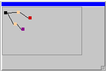

Introduction to Content Server Workflow Functionality
Content Server Workflow is a preinstalled, optional Content Server module that allows Content Server users to create and manage workflows in Content Server. Workflows are business processes that follow sequential paths from start to completion, and automate procedures that have a series of defined steps.
For example, a user can define a workflow that runs each time a user submits an expense report. During execution of this workflow, Content Server might route the document to a manager or supervisor for approval, and then to the company's Accounting department for payment. Content Server Workflow can create simple or complex workflows, depending on the business processes a Content Server user wants to automate.
You can extend Content Server's workflow functionality by creating new task types, data types, workflow types, and event trigger scripts that work with the existing Content Server Workflow module. When you extend Content Server's workflow functionality in this way, you create a separate, custom module to store the new objects you need for the extended functionality. Do not alter the original Content Server Workflow module. If you do, future upgrades to Content Server or the Content Server Workflow module will overwrite your changes. See Creating a Custom Module, or the Module Development Guide, for instructions on creating a new module in the Builder.
In this section, you learn about:
Workflows, Workflow Paths, and Work PackagesWorkflows are business processes that follow sequential paths from start to completion. The sequential paths of defined steps are called workflow paths. Some steps in a workflow path are tasks that particular Content Server users or groups are responsible for completing. Other steps execute automatically, including Milestone steps, which track workflow and workflow task due dates, and Sub-workflow steps, which initiate other workflow processes within the main workflow.
When a workflow is initiated, Content Server analyzes the first step and routes the corresponding task to the Tasks page of the Content Server user or group to which it is assigned. When that task is complete, Content Server repeats the analysis for each step in the workflow until the workflow is complete.
Content Server users view the workflow tasks assigned to them on their Personal Assignments page.
The data associated with each Content Server workflow that travels along the workflow route is stored in the work package. Work packages, by default, can include the attachments (for example, documents and other Content Server items), attributes, and comments. The workflow designer defines attributes to store and track information throughout the workflow. Workflow participants, depending on the workflow step settings, may examine and specify new values for workflow attributes at each workflow step. The workflow designer also sets whether users can view or modify comments, which are instructions or notes that can be added by workflow participants as they complete their task assignments.
In Content Server, each workflow is saved as a workflow map. Workflow maps contain the workflow route, along with all other information associated with a workflow and its steps. The workflow map is instantiated as an executing workflow each time a user initiates a workflow.
Workflow RolesWorkflow roles define the responsibilities and capabilities that particular Content Server users and groups have in a workflow. Content Server users can have four roles:
The workflow creator paints a graphical representation of a workflow process with Content Server's Java-based Workflow Designer. The Workflow Designer provides a drag-and-drop interface for defining the workflow route and work package using icons. It contains the Step Palette and the Zoom View, and is located on the Map Editor page in Content Server.
The Step Palette contains icons that represent the different types of steps that users can add to the workflow map they design with the Workflow Designer.
When workflow creators make a workflow map in the Workflow Designer, they define a work package that contains the data that the workflow participants require to complete their task assignments.
On the Workflow Properties page, workflow creators can:
The Zoom View, the movable mini-map of the workflow, allows workflow creators to navigate a workflow map that is not entirely visible in the Workflow Designer. Instead of using the scroll bars to view a large map, they move the rectangular outline in the Zoom View to display the corresponding area of the Workflow Designer. Clicking an area in the Zoom View takes them to that place in the main map.
The modifications made to a workflow map in the Workflow Painter are dynamically updated in the Zoom View. This is especially useful for large maps that cannot be displayed on a single screen in the Workflow Designer.
Workflow StatusManagers or initiators of a workflow can monitor the status of the workflow after it is initiated in Content Server. The Workflow Status page displays the title, status, step information, due date, and relationship associated with the active workflows in Content Server.